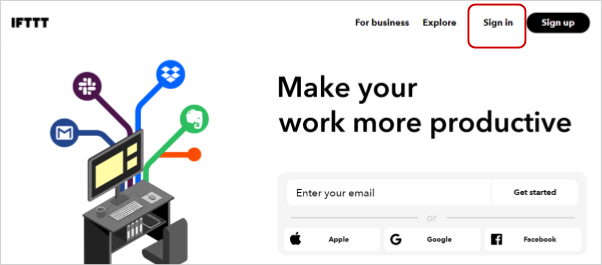
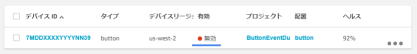

レシピ難易度：★★☆☆☆
塾のお迎え連絡の為だけに子供にスマートフォンを持たせるのはちょっと、、、とお悩みの方へ。省電力のモバイル通信「LTE-M」を搭載した乾電池動作するボタンデバイス「SORACOM LTE-M Button powered by AWS」を使ってみませんか。ボタンを押した後の通知先は AWS Lambda で自由にプログラミングが可能なこのデバイスで LINE へ「今から帰ります」を通知してみます。
本レシピは、動画コンテンツも用意しております。本レシピの動いている様子を、映像で確認できますので、ぜひ動画もご覧ください。
SORACOM LTE-M Button powered by AWS のセットアップ方法まで
実際の開発の様子
本レシピを行うのに必要な時間、概算費用
本レシピは以下の通りです。
- 必要な時間: 約1時間30分
- 概算費用: 約8,000円
※ 概算費用: ハードウェアや SORACOM を始めとした各種サービスの概ねの費用 (税や送料などの付帯費用や無料枠適用は考慮しないものとしています)
このコンテンツの進め方
ページの内容を読み、また作業を行ったら右下の［Next］を押して次のステップへ進みます。また、［Back］を使って戻ったり、左のナビゲーションメニューでもページの移動が可能です。
左上の［×］を押してコンテンツを終了することができます。また、ページを開きなおすことで再開できます。ページのアドレスはブラウザの［履歴］メニューを利用してください。
本レシピを行うためには以下のものをご用意ください。
ハードウェア
品名 | 数量 | 価格 | 購入先 | 備考 |
SORACOM LTE-M Button powered by AWS | 1 | 7,980円 | ||
パソコン | 1 | ― | ― |
|
スマートフォン | 1 | ― | ― | LINE の通知確認に利用します。タブレット、またはパソコンの LINE アプリでも代用可能です。 |
※ 金額はレシピ作成時となります。ソラコムで販売している金額は税抜き・送料別です。
その他必要なもの
必要なもの | 費用 | 作成方法など |
AWS アカウント | 無料※ | |
Email アドレス | ― | LTE-M Button のテストに使用します。その場で確認可能なアドレスを用意してください。 会社でのメールアドレスの場合、迷惑メール判定やアドレスの自動書き換えによって正常に完了できない場合があります。Gmail 等を利用するのをお勧めいたします。 |
LINE アカウント | 無料※ | スマートフォンにてLINEアプリをインストールするを行った後、 年齢確認は行う・行わないどちらでも大丈夫です。 アカウント作成後は、メールアドレスの登録をしてください。 |
IFTTT アカウント | 無料※ |
※ アカウント作成・維持の費用の料金です。
すでに AWS アカウント持っている場合の確認事項
- ルートアカウントを利用する場合：特に確認すべき事項はありません。先に進んでください。
- IAM アカウントを利用する場合：オレゴンリージョン(us-west-2)内の AWS IoT 1-Click と、そこから利用されるサービスへの権限の有無を確認してください。
本資料では us-west-2 を使用します。また、必要権限の解説およびサポートは致しかねますが、主に AWS IoT 1-Click, AWS Lambda, Amazon SES といったサービスへの権限、ならびに AWS IAM におけるロールの作成といった権限になります。AWS IoT 1-Click に対する認証とアクセスコントロール などを参照ください。
AdministratorAccess ポリシーが割り当てられていればハンズオンは完遂可能です (同ポリシーを割り当てたことによる影響については IAM アカウント管理者にご相談ください)
SORACOM LTE-M Button powered by AWS (以下、LTE-M Button)は、SORACOM のユーザコンソールに登録することで、以下のような機能が利用可能となります。登録は必須ではありませんが、是非登録ください。(登録しない場合は次へ進んでください)
- LTE-M Button の利用可能な期間、およびクリック回数が自動更新できます。
- LTE-M Button および LTE-M Button の通信に関連する情報を確認できます。
登録には SORACOM アカウントが必要となります。SORACOM アカウントの作成 (JP)をに沿って SORACOM アカウント作成してから SORACOM LTE-M Button powered by AWS をソラコムのボタン管理に登録する を行ってください。LTE-M Button の登録作業自体は約5分程度となります。
まず最初に動作確認のため、LTE-M Button が使えるように AWS IoT 1-Click に登録した後、Email を送ってみましょう。
用語解説
LTE-M Button を利用するためにはいくつかの用語を理解しておくと理解がスムースです。
用語 | 解説 |
AWS IoT 1-Click | AWS 内のサービス名称。ボタンデバイスとAWS 内のサービスを仲介する役割。 |
プレイスメント | ボタンデバイスと AWS IoT 1-Click を結びつける。 1プレイスメントには1デバイスを割り当てることになります。 |
テンプレート | AWS IoT 1-Click と Lambda 関数を結びつける。 1テンプレートには複数のプレイスメントが割り当てることができます。 |
プロジェクト | プレイスメントとテンプレートの組み合わせを格納する単位。 |
AWS マネジメントコンソール を開きログインしたあと、リージョンを "オレゴン" に変更し、 AWS IoT 1-Click のコンソールを開きます。
AWS IoT 1-Click のコンソールから [デバイスの登録] をクリックします。
LTE-M Button の電池カバーを開けて DSN を AWS IoT 1-Click に入力し [登録] をクリックします。
［登録］をクリックすると AWS IoT 1-Click は LTE-M Button からのボタン押下を待ち受ける状態になります。このタイミングで LTE-M Button のボタンを１回押してください。
登録済みになりましたら [完了] をクリックします。
以下のようにデバイス一覧が表示されていれば登録成功です。
表示されている内容はこのページの "Appendix: 管理画面で表示されている項目の意味" をご覧ください。
登録したボタンの右にある [...] をクリックした後、[デバイスの有効化] をクリックします。
以上で、LTE-M Button が AWS IoT 1-Click に登録され、利用可能な状態になりました。
Appendix: 管理画面で表示されている項目の意味
項目 | 意味 |
デバイス ID | DSN と呼ばれる一意の番号です。 AWS IoT 1-Click 対応デバイスには LTE-M Button の他に AWS IoT エンタープライズボタンといったものがありますが、それら全てにおいて一意になる番号です。 |
タイプ | デバイスの形状を表します。現在は button のみ(の様)です。 |
デバイスリージョン | デバイスが管理されているリージョンです。現在のところ利用者はリージョンを選ぶことができず、オレゴン(us-west-2) 固定となります。 |
有効 | 有効 もしくは 無効 です。初期状態は 無効 です。 有効 は課金対象デバイスです。 無効 にする方法は SORACOM LTE-M Button を無効化する をご覧ください。 |
プロジェクト、配置 | ボタンに紐づいたプロジェクトとプレイスメントの状況です。初期状態は双方とも 未割り当て です。 |
ヘルス | ボタンの寿命です。詳しくはこのページ内の "Appendix: ボタンの「ヘルス」について" をご覧ください。 |
Appendix: ボタンの「ヘルス」について
ヘルス に表示されている % は 1 - 押下回数 / 1500 もしくは 1 - 開始日からの経過日数 / 365 のどちらかで小さいほうが表示されます。
LTE-M Button においての ヘルス は電池残量ではありません。(他のモデルでは電池残量である場合がありますが異なりますのでご注意ください)
押下回数、開始日からの経過日数、電池残量を具体的に管理したい場合は SORACOM LTE-M Button powered by AWS をソラコムのボタン管理に登録することで SORACOM ユーザーコンソールおよび SORACOM API で確認することができます。
注意：貸出で参加している方は、 SORACOM への登録しないでください！
LTE-M Button が押されたら Email が送信される設定を AWS IoT 1-Click に行います。
AWS マネジメントコンソールのリージョンが オレゴン (us-west-2) になっている事を確認します。
なっていなければ オレゴン に切り替えてください。
AWS IoT 1-Click コンソールから [管理] > [プロジェクト] を開いた後 [プロジェクトの作成] をクリックします。
プロジェクト情報の指定で以下のように入力した後 [次へ] をクリックします。
プロジェクト名 |
|
プロジェクトのプレイスメントのテンプレートの定義では以下のように設定した後 [プロジェクトの作成] をクリックします。
- デバイステンプレートの定義 の [開始] をクリックします
- テンプレートのデバイスタイプを選択する 一覧で すべてのボタンタイプ をクリックします
- 表示されたフォームを下記のように設定します
デバイステンプレート名 |
|
アクション | E メールの送信 |
- プレイスメントの属性 を以下のように設定します
必須の E メールのデフォルト値 | <LTE-M Button を押した際に送信される先の Email アドレス> |
必須の件名のデフォルト値 | テスト送信 |
必須の本文のデフォルト値 | SORACOM LTE-M Button のテスト送信 |
プロジェクトとテンプレートが正常に作成されたら [プレイスメントの作成] をクリックします。
プロジェクトの新しいプレイスメントでは以下のように設定した後 [プレイスメントの作成] をクリックします。
デバイスのプレイスメント名 |
(任意の文字列) |
[デバイスの選択] をクリック | ボタンの一覧が表示されます。結び付けたいボタンをクリックします。 |
プレイスメントの属性 | 特に編集することはありません。 先に作成した「テンプレート」で設定した内容が引き継がれています。 逆にここでテンプレートから引き継がれた内容を上書きすることも可能です。 |
以下のような画面になれば完了です。
バックボタン (←) をクリックして AWS IoT 1-Click コンソールに戻ります。
以上で、LTE-M Button を押した際に Email が送信される設定が完了しました。
しかしながら、この状態では AWS からのEmail 送信は保留されるため、その解除を行います。(迷惑メールの温床になるのを防ぐため、標準で保留されるようになっています)
現在の状態では AWS からのEmail 送信は保留されるため、その解除を行います。
AWS マネジメントコンソールのリージョンが オレゴン (us-west-2) になっている事を確認します。
なっていなければ オレゴン に切り替えてください。
Amazon SES (Simple Email Service) のコンソールを開きます。
[サービス] をクリックした後、検索窓に ses と入れるか、 "カスタマーエンゲージメント" カテゴリの中の Simple Email Service をクリックしてください。
[Email Addresses] をクリックした後、[Verify a New Email Address] をクリックします。

フォームの "Email Address:" にLTE-M Button を押した際に送信される先の Email アドレスを入力して、 [Verify This Email Address] をクリックします。
その次に表示されたダイアログは [Close] をクリックします。
直後の状態は以下の通りです。
pending verification と表示されている事を確認してください。
メールソフトを開き、下記のようなメールが届いている事を確認したら、メール本文内の URL をクリックしてください。

クリックすると「検証に成功しました」というページが表示されます。
また、クリックした後は本メールは削除してしまって構いません。
Amazon SES コンソールに戻りリロードボタン で表示を更新した後に verified と表示されている事を確認してください。
以上で、LTE-M Button を押したら Email の送信がされる設定がすべて完了しました。
ここまでの作業で AWS IoT 1-Click を通じて Amazon SES 経由でメールが送信されるようになりました。
実際に LTE-M Button を押してみてください。以下のようなメールが届いたら成功です。
ボタン押下の内容に応じて SINGLE の部分が DOUBLE や LONG に変わりますので試してみてください。
Email 送信については、Lambda 関数を作らずともメールの送信ができました。しかし、実際は AWS IoT 1-Click によって Lambda 関数が自動生成されており、ボタン押下のアクションではその自動生成された Lambda 関数が実行される仕組みで動いています。
ここでは自動生成された Lambda 関数を編集することでメールの内容を変更してみます。
変更の内容は、メールの本文の末尾に「これは Lambda 関数で追加した行です」という行を追加します。
AWS マネジメントコンソールのリージョンが オレゴン (us-west-2) になっている事を確認します。
なっていなければ オレゴン に切り替えてください。
AWS Lambda のコンソールを開きます。
[サービス] をクリックした後、検索窓に lambda と入れるか、 "コンピューティング" カテゴリの中の Lambda をクリックしてください。
Lambda 関数の一覧から iot1click_onclick_email_... という関数を探します。
この関数が AWS IoT 1-Click によって自動生成された Lambda 関数です。
先ほど見つけた iot1click_onclick_email_... をクリックします。
スクロールして 関数コード というセクションを表示します。
ここに書かれた Python コードが自動生成された Lambda 関数の中身です。ここを編集していきます。
関数コードの中の 43 行目に以下を追加します。
body += '\nこれは Lambda 関数で追加した行です'先頭の4文字分の空白も含めて、以下のようにしてください。
右上の [保存] をクリックします。
Lambda 関数の編集画面 右上の [テストイベントの選択...] > [テストイベントの設定] をクリックします。

フォームに以下のように入力した後、[作成] をクリックします。
新しいテストイベントの作成 | (変更しません) |
イベントテンプレート |
(変更しません) |
イベント名 |
(任意の文字列) |
テキストエリアに以下の JSON を入力します。
その際 email の you@example.jp 部分を送信先のアドレスに変更することを忘れないでください。
{
"deviceEvent": {
"buttonClicked": {
"clickType": "SINGLE",
"reportedTime": "2018-05-04T23:26:33.747Z"
}
},
"deviceInfo": {
"attributes": {
},
"type": "button",
"deviceId": " G030PMXXXXXXXXXX ",
"remainingLife": 5
},
"placementInfo": {
"projectName": "TestEmail",
"placementName": "button1",
"attributes": {
"email": "you@example.jp",
"subject": "テスト送信",
"body": "SORACOM LTE-M Button のテスト送信"
},
"devices": {
"myButton": " G030PMXXXXXXXXXX "
}
}
}画面上は以下のようになります。
Lambda 関数の編集画面 右上が 1click(テストのイベント名) になっている事を確認したら [テスト] をクリックします。
テストの結果が Lambda 編集画面に表示されます。
Status に実行結果が表示されるほか logging.info からの出力が表示されているのが確認できます。
Success (成功) であれば、以下のようなメールが届きます。追加した部分が本文に現れています。
ボタンからの動作を確認してみる
AWS Lambda は 保存 した時点でコードの内容が実行できるようになっています。
そのためこの時点で AWS IoT 1-Click からの呼び出しにも新しいコードの内容で応答することになります。
実際にボタンを押してメールが届くか確認してみてください。
以上で。 Lambda 関数の編集からテストまでの一連の作業が完了しました。また、AWS Lambda の「テスト機能」を活用する事で、LTE-M Button の実機が無くとも開発を進めることができます。
デバイスに新しいプロジェクトを割り当てたり、デバイスの解除を行う前には必ずプレイスメントからデバイスの割り当てを解除する必要があるため、ここでプレイスメントからデバイスの割り当てを外す作業を学んでおきます。（比較的頻繁に行う作業です）
AWS マネジメントコンソールのリージョンが オレゴン (us-west-2) になっている事を確認します。
なっていなければ オレゴン に切り替えてください。
AWS IoT 1-Click 管理画面を開きます。
[管理] > [プロジェクト] とクリックした後、解除を行いたいデバイスが所属しているプロジェクトをクリックします。
[プレイスメント] から解除したいデバイスの [...] をクリックした後に表示される [プレイスメントの編集] をクリックします。

デバイスが表示されている部分の [クリア] をクリックした後、[プレイスメントの更新] をクリックします。
これでデバイスとプレイスメントの割り当てが無くなりました。
ここからは LINE に通知を送信する設定です。IFTTT と呼ばれる中継サービスを経由して LINE にメッセージを送ってみます。
LINE Notify 右上のログインから LINE のアカウントでログインしてください。
ログインの時に必要なメールアドレスは メールアドレスの登録 で済ませておいてください。また、登録状況を確認する方法は LINE Notify ヘルプセンター / 登録しているメールアドレスを確認するには？ をご覧ください。
ログインができれば設定完了です。ブラウザはそのままにしておいて次に進みます。
IFTTT のページを開き、［Sign in］をクリックし、ログインします。

IFTTT 管理画面右上の をクリックしたあと ［Create］をクリックします。
をクリックしたあと ［Create］をクリックします。
This をクリックします。
［Webhooks］ をクリックします。
［Receive a web request］ をクリックします。
Event Name 欄に button と入力し ［Create trigger］ をクリックします。
必ず半角小文字で button として下さい。(大文字小文字の判定が入ります)
That をクリックします。
［LINE］をクリックします。
［Connect］ をクリックします。
LINE へのログインが表示されたら LINE Notify へのログインの時と同じアカウントでログインしてください。
［同意して連携する］をクリックします。
ウィンドウは自動的に消えます。
［Send message］をクリックします。
フォームを以下のように設定し ［Create action］ をクリックします。
Recipient | (変更しません) |
Message |
|
Photo URL |
|
［Finish］をクリックします。
AWS Lambda から IFTTT を起動する方法として Webhooks を利用します。そのための URL や設定情報を入手します。
IFTTT 管理画面右上のをクリックしたあと ［My services］をクリックします。
Webhooks をクリックします。
［Documentation］をクリックします。
表示されたページで以下のようにします。
- {event} の場所に
buttonと入力 - "value1": の横の空欄に テスト送信 と入力
入力ができたら ［Test It］をクリックします。
LINE にメッセージが届けば全ての設定が成功しているので、先に進みます。もしメッセージが届かないようであれば、前のステップに戻って設定を見直してください。
同じページの Your key is: をメモします。
Your key is: の情報が AWS Lambda からの起動用のキーとなります。漏洩しないように管理してください。(キーは破棄できます。また、再生成可能です。)
以上で送信テストとキーの入手が完了しました。
IFTTT の Webhooks を呼び出す Lambda 関数を作成します。
AWS マネジメントコンソールのリージョンが オレゴン (us-west-2) になっている事を確認します。
なっていなければ オレゴン に切り替えてください。
AWS Lambda のコンソールを開きます。
[サービス] をクリックした後、検索窓に lambda と入れるか、 "コンピューティング" カテゴリの中の Lambda をクリックしてください。
［関数の作成］をクリックします。
続く画面では［一から作成］ を選んだあと、以下のように入力して [関数の作成] をクリックします。
名前 |
(任意の文字列) |
ランタイム | Node.js 10.x |
Lambda 関数の編集画面の 関数コードでは、以下のようにします。
ハンドラ |
(デフォルトでは index.handler となっています。必ず直すようにしてください) |
コード | 以下の URL のコードと入れ替えます。 https://github.com/j3tm0t0/1-click/blob/master/functions/ifttt/index.js |
Lambda 関数の編集画面 右上の [テストイベントの選択...] > [テストイベントの設定] をクリックします。
フォームに以下のように入力した後、[作成] をクリックします。
新しいテストイベントの作成 | (変更しません) |
イベントテンプレート |
(変更しません) |
イベント名 |
(任意の文字列) |
テキストエリアに以下の JSON を入力します。その際、以下の書き換えを行ってください。
key | IFTTT の Webhooks でメモしたキー |
{
"deviceEvent": {
"buttonClicked": {
"clickType": "SINGLE",
"reportedTime": "2018-05-04T23:26:33.747Z"
}
},
"deviceInfo": {
"attributes": {},
"type": "button",
"deviceId": " G030PMXXXXXXXXXX ",
"remainingLife": 5
},
"placementInfo": {
"projectName": "TestProject",
"placementName": "button1",
"attributes": {
"event": "button",
"key": "IFTTT の Webhook key を入れる",
"value1": "値1",
"value2": "値2",
"value3": "値3"
},
"devices": {
"myButton": " G030PMXXXXXXXXXX "
}
}
}
Lambda 関数の編集画面 右上が 1click(テストのイベント名) になっている事を確認したら [テスト] をクリックします。
この結果 LINE に通知が届けば Lambda 関数の作成が完了です。
AWS マネジメントコンソールのリージョンが オレゴン (us-west-2) になっている事を確認します。
なっていなければ オレゴン に切り替えてください。
AWS IoT 1-Click 管理画面を開きます。
LTE-M Button のプレイスメントの確認
対象となる LTE-M Button のプレイスメントが未割り当てであることを確認してください。プレイスメントが割り当たっていた場合は、 "AWS IoT 1-Click の "プレイスメント" からデバイスの割り当てを外す" のステップに沿って割り当てを解除してから作業を行ってください。
AWS IoT 1-Click [管理] > [プロジェクト] とクリックした後、[作成] をクリックします。
以下、プロジェクト内での設定です。
ステップ 1/2
プロジェクト名 |
(任意の文字列) |
ステップ 2/2
デバイステンプレートの定義 | 全てのボタンタイプ |
デバイステンプレート名 |
(任意の文字列、プロジェクト名と異なってもＯＫ) |
アクション | Lambda 関数の選択 |
AWS リージョン | オレゴン |
Lambda 関数 | 1click-ifttt (先ほど作成した Lambda 関数) |
プレイスメントの属性 (属性の名称も入力します) | |
|
(IFTTT で設定した Event Name) |
| (IFTTT の Webhooks で入手したキー) |
| 今から帰ります (任意の文字列) |
| (空) |
| (空) |
プロジェクトとテンプレートが正常に作成されたら [プレイスメントの作成] をクリックします。
プロジェクトの新しいプレイスメントでは以下のように設定した後 [プレイスメントの作成] をクリックします。
デバイスのプレイスメント名 |
(任意の文字列) |
[デバイスの選択] をクリック | ボタンの一覧が表示されます。結び付けたいボタンをクリックします。 |
プレイスメントの属性 | 特に編集することはありません。 先に作成した「テンプレート」で設定した内容が引き継がれています。 逆にここでテンプレートから引き継がれた内容を上書きすることも可能です。 |
以上で全ての作業が完了です。
実際に LTE-M Button を押して届くか試してみましょう。
ここからの発展
- AWS IoT 1-Click のプレイスメントの属性における
value1の値などを編集してみてください - IFTTT のアプレットにおける Message を変更してみたり、 Photo URL を入れてみてください。
Photo URL で使えそうな画像のサンプル URL: https://blog.soracom.jp/images/2018-07-04-soracom-lte-m-button/soracom-lte-m-button-powered-by-aws.png
本レシピでは費用がかかるサービスを利用しています。
本項をよく読み、必要な操作や解除作業を行うようにして、想定外の費用が掛からないようにしてください。
費用について
ここで記載している金額は全て税別、送料別となります。
SORACOM プラットフォームの利用料金
SORACOM LTE-M Button powered by AWS は購入費用の中に基本使用料や通信料が含まれているため、本レシピで追加になる費用はありません。
AWS の利用料金
有効な AWS IoT 1-Click デバイスの台数 x 有効なデバイスあたりの日割り料金 x 利用日数 = AWS IoT 1-Click の月額料金 となります。 1 デバイスの場合: 0.25 USD / 月 であるため、 1 日の利用であれば 約 0.0083 USD (約 1 円) が目安となります。 「無効化されたデバイス」は課金対象外となります。 無料枠はありません。 | |
AWS Lambda からの送信は "Amazon EC2 でホストされているアプリケーションからの E メール送信 " に該当し、 1,000 件ごとに 0.10 USD となります。 月間 62000 通までの無料枠があります。 今回は無料枠に収まる範囲となります。 | |
メモリ 128MB における 100 ミリ秒単位の価格は 0.000000208 USD です。 月間 100 万リクエストの無料枠があります。 今回は無料枠に収まる範囲となります。 |
※ AWS における料金は目安であり保証するものはありません。必ず各自でご確認ください。
登録したボタンは無効化することができます。主に費用を軽減するために利用する機能です。
AWS IoT 1-Click の管理画面を開きます。リージョンはオレゴンであることを確認してください。
[管理] > [デバイス] とクリックした後、解除を行いたいデバイスの [...] をクリックした後に表示される [デバイスの無効化] をクリックします。
対象デバイスの有効が無効となれば完了です。

- IFTTT の My services から LINE を選択、Settings で Remove LINE で切断。
- LINE Notify のマイページ の連携中サービスで IFTTT との接続で 解除 で解除。
本レシピで自動的・能動的に作成した AWS の一覧となります。
AWS Lambda |
|
AWS IAM ロール |
|
AWS IAM ポリシー |
|
AWS Lambda
Lambda 関数は残っていても実行されない限りは費用は発生しません。削除は任意です。
AWS IoT 1-Click のプロジェクトやプレイスメント、テンプレートの削除
残っていても費用は発生しません。削除は任意です。
Amazon SES 認証済みメールアドレス
残っていても費用は発生しません。削除は任意です。
AWS IAM ロール、ポリシー
残っていても費用は発生しません。削除は任意です。
本レシピでは、シンプルなボタン型デバイスを用いた「誰でもできる現場のデジタル化」として "今から帰ります" を通知する仕組みを作りました。ボタンは学習コストが低いため活用させる側としてもトータルで安くすることができます。
また AWS Lambda を利用することで真の意味で「動いたら動いただけの課金」を実現しています。
よくあるご質問はLet's IoT プロトタイピング〜今から帰るよボタンを作ってみよう〜の動画とQAを公開でご案内しています。こちらもご覧ください。
資料集
本格的な開発に必要な情報や企画に盛り込めるスライドをご紹介しています。
主に別の AWS アカウントへ再登録する際に利用する機能です。
AWS IoT 1-Click の管理画面を開きます。リージョンはオレゴンであることを確認してください。
[管理] > [デバイス] とクリックした後、解除を行いたいデバイスの [...] をクリックした後に表示される [デバイスの登録解除] をクリックします。
一覧から対象デバイスが無くなれば解除完了です。